01Welcome to SlateOS
SlateOS is an operating system for 64-bit PCs, written from scratch in Rust. Its kernel, its desktop (Strata), its shell, its tools and its apps are all its own: there is no Linux, BSD or UNIX code inside. Yet it runs Linux software unmodified, because it speaks Linux's system-call interface, implemented from the documentation.
It has two sides, and you choose how much of each you want:
- Slate mode, the default: a signed, read-only system that changes only through its package manager and updater, with every change undoable, and programs that get only the permissions they're given.
- Linux compatibility, one switch away: Linux programs, desktop apps from Flathub, Firefox, and a whole Linux system of your own for building software from source, each kept apart from SlateOS.
SlateOS is early and changing quickly. Expect bugs, crashes, missing features and data loss, and changes between releases that break what worked before. Try it in a virtual machine or on a spare disk, and back up first. Don't use it in production.
How this guide is organised
The first part takes you from a USB stick to a running system. The next two parts are everyday use and the system underneath. The Linux part covers running Linux programs and building them from source. The reference part has troubleshooting and a cheat sheet. The search box at the top filters every chapter as you type.
Throughout, super is the key with the Windows (or ⌘) logo, a bold name is something you click, and this is something you type in a terminal.
02What you need
- A 64-bit PC (Intel or AMD) that starts in UEFI mode or legacy BIOS mode, with a disk of 2 GB or more to install on. A bigger disk is worth it if you'll use Linux apps or build software from source: your own Linux system takes about 1.2 GB.
- A USB stick of 512 MB or more. Everything on it is erased.
- A screen, keyboard and mouse for the install. Afterwards the PC can also be used without a screen, over SSH.
- A wired network connection to reach the internet. Most home networks need no setup.
What SlateOS runs on
SlateOS has its own drivers, so check that your PC has what it needs:
| hardware | what works |
|---|---|
| Disks | NVMe drives, SATA drives (with the firmware's SATA mode set to AHCI), USB drives |
| Wired network | Intel I210, I211, 82576, and the 2.5 Gigabit I225 and I226 (and I220-V, I221-V); USB Ethernet adapters of the standard CDC Ethernet kind |
| Wi-Fi | Not yet. Use a cable or a USB Ethernet adapter |
| Keyboard and mouse | USB (through the PC's USB 3 controller), PS/2, and Bluetooth Low Energy mice and keyboards |
| Graphics | Any card, at the resolution the PC starts with. Some AMD Radeon graphics can run at your monitor's own resolution (full graphics) |
| Bluetooth | USB adapters, and the Bluetooth half of MediaTek's MT7961, MT7922, MT7902 and MT7925 cards |
| Sound | Not yet |
| Sleep | Not yet. A short press of the power button shuts down cleanly |
Many PCs have built-in Ethernet that SlateOS doesn't drive yet (often Realtek's). A USB Ethernet adapter gets you online on those.
03The install medium
There are no downloads yet: the install media are built from SlateOS's source code, on Linux, with rustup, git, a C compiler and binutils.
git clone https://github.com/neuralpunk/slate-os cd slate-os make deps # checks the tools, and says how to install what's missing make usb # target/slate-usb.img, for USB sticks make iso # target/slate.iso, for DVDs and virtual machines
The first build installs the pinned Rust toolchain and takes a few minutes. make alone builds both images, and make run boots SlateOS in QEMU.
Writing the USB stick
The image goes onto the stick raw, byte for byte, over the whole stick. Copying the file onto the stick doesn't work.
With dd
Run
lsblk, plug the stick in, and runlsblkagain. The disk that appeared (say/dev/sdb) is the stick. Check that its size matches.Write the image to the whole disk (
sdb, notsdb1):sudo dd if=target/slate-usb.img of=/dev/sdX bs=4M status=progress conv=fsync
With GNOME Disks
Choose the stick, open the menu (⋮), choose Restore Disk Image… and pick slate-usb.img.
Writing to the wrong disk erases it. Check the name and size twice.
04Starting and trying it
Set up the PC's firmware (once)
Plug the stick in, turn the PC on and open its firmware setup (often Del, F2, F10 or Esc). Then:
- Secure Boot: off. SlateOS's bootloader isn't signed for Secure Boot.
- Boot mode: UEFI is best. Legacy BIOS (CSM) works too, but installing beside another system needs UEFI.
- SATA mode: AHCI, if the PC has SATA drives. In RAID or "Intel RST" mode SlateOS can't see them. If Windows is installed, changing this can stop Windows from starting; leave it alone if your disk is NVMe.
Start from the stick
Press the boot menu key while the PC starts (often F12, F11, F8 or Esc) and choose the stick. If it's listed twice, the entry starting "UEFI:" is the one to choose.
SlateOS's boot menu shows Install Slate for three seconds, then starts it. Install Slate (text mode) starts the text installer instead.
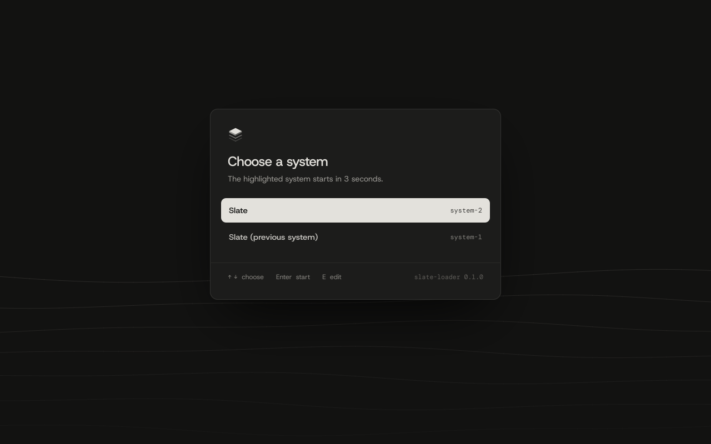
Try SlateOS without installing
On the installer's welcome screen, Try SlateOS starts the whole Strata desktop from the stick, as the user live with no password. Nothing on the computer's disks changes, and everything is gone when you restart. When you're ready, Install SlateOS on the top bar (or in the launcher) brings the installer back.
05Installing SlateOS
Installing erases the disk you choose, unless you install beside what's already there. Back up first.
The installer works with the mouse or the keyboard: Tab moves between controls, the arrow keys choose in a list, Enter goes on, and Esc offers to quit (which changes nothing until the install starts). The button at the bottom left of the welcome screen offers Larger text and High contrast.
Welcome. Choose English (United States) or English (United Kingdom) and press Install SlateOS.
Time zone and keyboard. Type to narrow the lists (
Berlin,Norway,German). Sixteen keyboard layouts are offered; the one you pick takes effect at once, so try it in the test field before you type your password. On layouts with accent keys, the accent goes on the next letter; press it then Space for the accent alone.Disk. Choose where to install. The stick you started from is never offered. Encrypt disk (on by default) locks SlateOS's part of the disk with your password: it's asked at every start, and without it (or a recovery key) nobody can read the disk, including you.
Mode. Slate mode (the default, most secure) or Linux compatibility, which also lets Linux programs run. You can switch any time later.
Desktop. The Strata desktop (a graphical login) or Command line only. With supported AMD Radeon graphics, it also asks about full graphics.
Network. Automatic (DHCP) for most networks, or a Fixed address such as
192.168.1.20/24with a gateway and name servers.Account. Your name, a username, the computer's name and a password. There is no root password: you approve system changes with your own.
Press Install SlateOS. It takes about a minute. When it says SlateOS is ready, remove the stick and press Restart now. If the PC doesn't find the new system, pick it once in the firmware's boot menu ("Slate", "UEFI OS" or the disk's name).
Installing beside another system
When the disk already has partitions (Windows, Linux or another SlateOS), the installer shows what's there and offers:
- Install beside it: SlateOS takes the largest free space (2.1 GB at least, or 2.7 GB if it can't share the disk's EFI System Partition) and changes nothing else. Shrink the other system's partition with its own tools first (in Windows: Disk Management, "Shrink Volume").
- Erase disk and install SlateOS.
- Choose partitions yourself: delete what you no longer want (nothing is deleted until the install starts; Undo deletions brings them back), then choose a free space and how many GB SlateOS gets.
This needs a GPT disk and the installer started in UEFI mode. Afterwards SlateOS's boot menu lists the other system too (see Several systems on one PC).
The text installer
It asks the same questions one after another. To confirm erasing a disk type erase, to confirm deleting partitions delete. At the disk question, shell gives a command line (dmesg shows what the system found), and try lets you try SlateOS at a command line as live.
Installing without questions
For many PCs, or one reached over a serial line: start the text installer, type shell, and run:
slate-install --list # the disks slate-install --map sda # what a disk holds echo 'your-password' > /tmp/pw slate-install --disk sda --password-file /tmp/pw --yes
That makes a command-line system without encryption, with the password for root. Add to it:
| option | what it does |
|---|---|
--network WORDS | network settings, as slate-network takes them, e.g. "* static 192.168.1.20/24 gateway 192.168.1.1" |
--authorized-keys FILE | SSH keys that may log in as root |
--linux-compat | turn on Linux compatibility |
--full-graphics | full graphics on supported AMD Radeon graphics |
--keyboard, --timezone | the keyboard layout and the time zone |
--beside | install in the largest free space, keeping the rest (--delete N first, --root-size G) |
--overwrite-medium | install onto the disk the installer started from (it runs from memory) |
06The first start
Unlocking the disk
If you encrypted the disk, Unlock this disk comes first. Type your password and press Enter; a dot shows for each character. Without a working screen the console asks instead, showing nothing as you type.
Logging in
With Strata, the login screen lists the people on the computer: choose yourself, type your password, press Enter. Restart and Power off are at the bottom right.
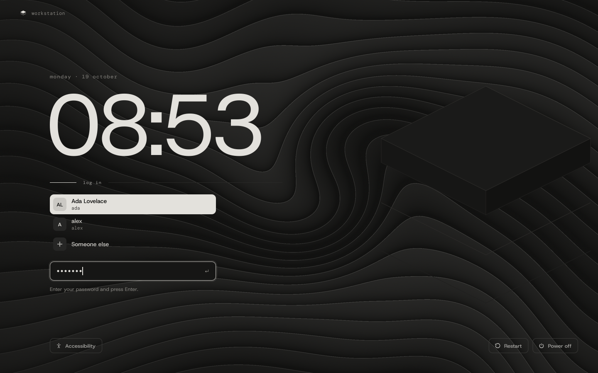
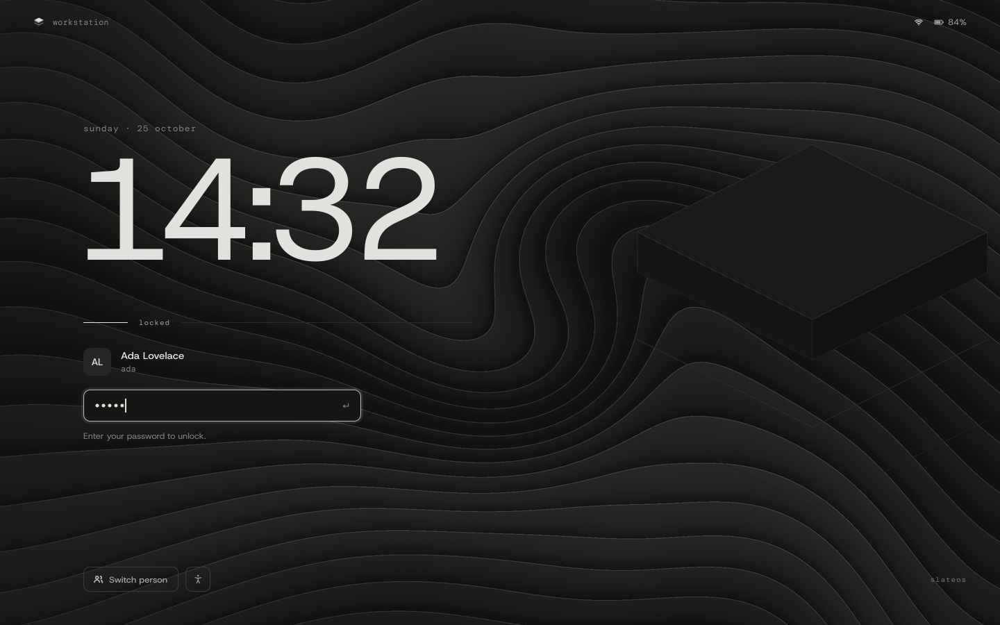
With the command line only, the console shows a login prompt and the PC's address (Network address: 192.168.1.50). Log in as yourself; su - with your own password gives a root shell.
If the login screen ever doesn't work, press e in the boot menu and add slate.login=text to the command line for a text login.
07The Strata desktop
Strata is SlateOS's own desktop: a top bar, floating windows, four workspaces, and a quiet graphite look with colour only where it means something.

The top bar
- Left: the Applications menu (or press super on its own) and the workspaces 1–4.
- Middle: the open windows. Click one to bring it up, or to minimise it if it's already in front.
- Right: the mode (slate mode or Linux compatibility), the network, the clock, and the power button.
Windows
Drag a window by its title bar and resize it from its edges. The title bar's buttons minimise, maximise and close. Drag a window to a screen edge or corner to fill that half or quarter. A terminal resizes by whole characters, showing its size as you drag.
Linux programs' windows carry a linux tag in their title bar, so you always know what's SlateOS's and what isn't.
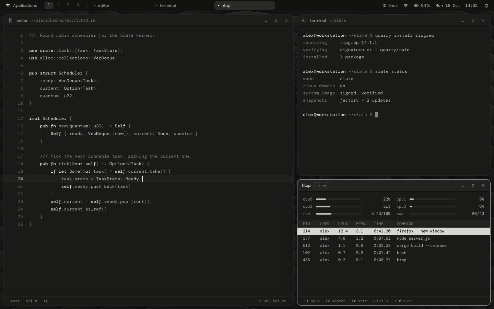
The Applications menu and the launcher
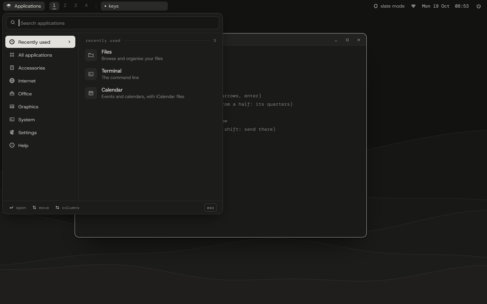
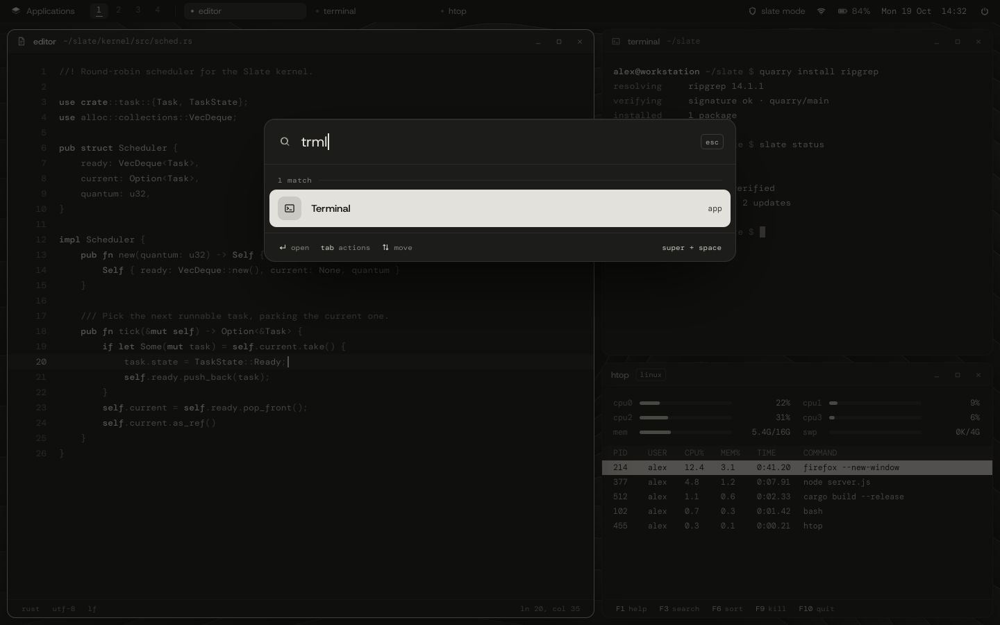
The launcher (super + space): type part of an app's name and press Enter. With nothing typed, it lists the apps by category, the ones you used last first. It also has Lock screen, Log out, Restart, Power off and Roll back to the previous system.
The desktop's icons
The icons are what's in your ~/Desktop folder. Double-click to open. Files is there from the start; delete it from the folder and it stays gone. Drag icons anywhere (they stay put), into a folder, or onto a Files window. Select several with ctrl or shift, or by dragging a box. The right button gives Open, Rename, Move to Trash, and on the wallpaper New Folder and Change Wallpaper.
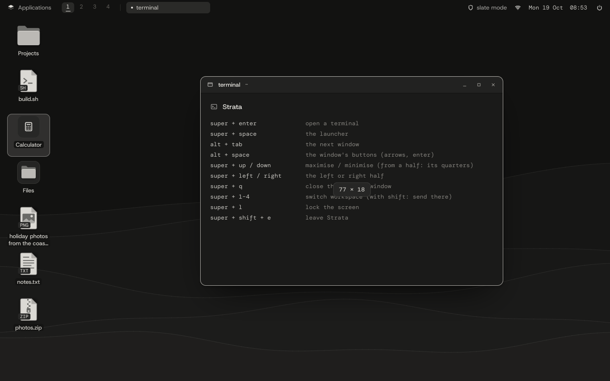
Power, lock and approvals
The power button opens a dialog to lock, log out, restart or shut down. A restart or shut down can be set for later; the top bar counts down to it. If a window may have unsaved work, the dialog names it.
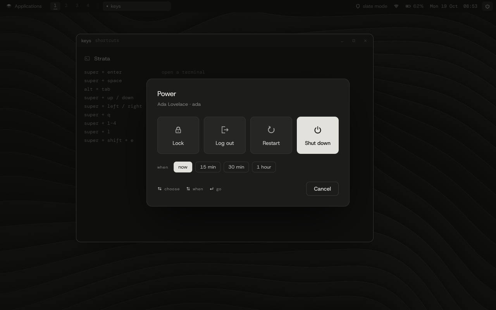
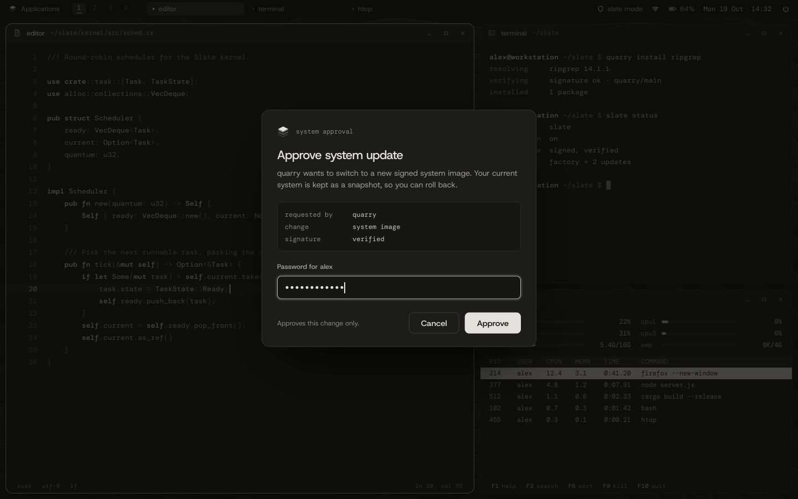
Anything that changes the system for everyone (the time zone, the network, a package) shows an approval dialog that asks for your own password. Only Strata itself can show it, so a program can't fake one.
08Keyboard shortcuts
| keys | what they do |
|---|---|
| super | on its own: the Applications menu (again to close it) |
| super + space | the launcher: apps, and lock, log out, restart, power off, roll back |
| super + enter | open a terminal |
| alt + tab | the next window |
| alt + space | the window's title bar buttons (arrows or Tab move, Enter presses, Esc goes back) |
| super + ← / → | fill the left or right half |
| super + ↑ / ↓ | from a half: its top or bottom quarter; elsewhere: maximise or minimise |
| super + 1–4 | switch workspace (with shift: send the window there) |
| super + q | close the focused window |
| super + l | lock the screen |
| super + shift + e | leave Strata for the text console |
The Shortcuts app lists these too. Restart, Power off and Roll back ask for your password first.
09The apps
SlateOS comes with a small set of its own apps, all in the Applications menu.
Terminal
The command line, with SlateOS's own shell, in tabs. 24-bit colour, mouse support, and text that reflows as you resize. See chapter 12.
Files
Your files and folders, disks and trash. See chapter 10.
Text Editor
Plain text and code, with colour for common languages, undo and redo, and search. ctrl + o opens another file.
Image Viewer
PNG, JPEG, GIF and BMP. The left and right arrows go through the folder; + and - zoom.
Archive Manager
Looks into zip, tar, tar.gz, cpio and gzip archives and extracts them. Makes zip, tar.gz and tar.
Calculator
Type sums as you'd write them ((3+4)/2, 2^10, sin 30) and press Enter. Tab shows the scientific keys.
Clock
The time in other places, alarms, a timer and a stopwatch. Tab moves between them.
Calendar
Your events by month or as an agenda. Reads and writes iCalendar (.ics) files.
Contacts
An address book; type to search. Imports and exports vCard (.vcf).
Help
The guides, searchable, and About this system: what the PC is made of. ctrl + c there copies it for a bug report.
Shortcuts
Every desktop key, in one window.
System Monitor
What's running and what it uses: processors, memory, network, disks. A process tree and each process's details. Type to find; Delete ends a program.
Disks
Disks, partitions and what's on them. Erase, add a partition, format FAT32 or SlateFS. It never touches a disk in use. See chapter 10.
Software Updater
Updates for SlateOS and your Flatpak apps, with rollback. See chapter 15.
App Center
Thousands of apps from Flathub, by category and search. See chapter 22.
Web Browser
Firefox (or another Flathub browser), set up for you on first use. See chapter 22.
Solitaire
Klondike, under Games: drag and drop or the keys, draw one or three, unlimited undo, a move count and a clock.
Mines
Clear the field without opening a mine. Three board sizes with best times; the first square is never a mine; flags with the right button.


10Files and disks
Files
Files shows your folders as a list or a grid, with thumbnails of pictures and the first lines of text files. The sidebar has your home folder's usual places, the disks and the trash.
- Find things: typing filters the folder; ctrl + f searches under it, by name or by name and text, with results as they're found.
- Copy and move: drag, or copy and paste. Several copies can run at once, each sizing itself in the background.
- Open: pictures, archives and text open in SlateOS's apps.
- Trash: deleted files go to the trash of the disk they're on, and can be restored from there.
- USB disks: plug one in and it appears in the sidebar. To unplug safely, right-click it and choose Power off (or
slate-disk poweroff).

Disks
Disks lists every disk, its partitions and what each holds. It can erase a disk, add a partition and format it (FAT32 to share with other computers, or SlateFS), each after asking your password. It refuses anything that's in use, so it can't pull the ground from under your running system.
11Settings
Settings has its sections in a sidebar. Changes that affect everyone ask for your password first.
| section | what's there |
|---|---|
| Appearance | The theme (Graphite, Light, Copper Noir or Sediment) and the wallpaper: a built-in design or your own picture |
| Accessibility | High contrast, dimming the windows you aren't using, and less motion |
| Date and time | The computer's time zone, for everyone |
| Network | Automatic or a fixed address, for every card or each card on its own |
| Bluetooth | Devices nearby, pairing and forgetting them |
| Users | The people who can log in; see below |
| Security | Slate mode and Linux compatibility, the firewall and its open ports, the system image, disk encryption |
| Session | When the screen locks; removing the desktop if you want the command line only |
| Displays | Where each display is, its resolution, refresh rate and scale; full graphics on supported AMD Radeon graphics |
| Linux boxes | The disk space your Linux systems use, and cleaning or removing them (chapter 23) |
| About | This computer |
Themes
Four themes, each a whole palette: Graphite (the default, dark), Light, Copper Noir and Sediment. Linux apps from Flathub follow the theme too, light or dark, its accent and its fonts, changing as you switch.
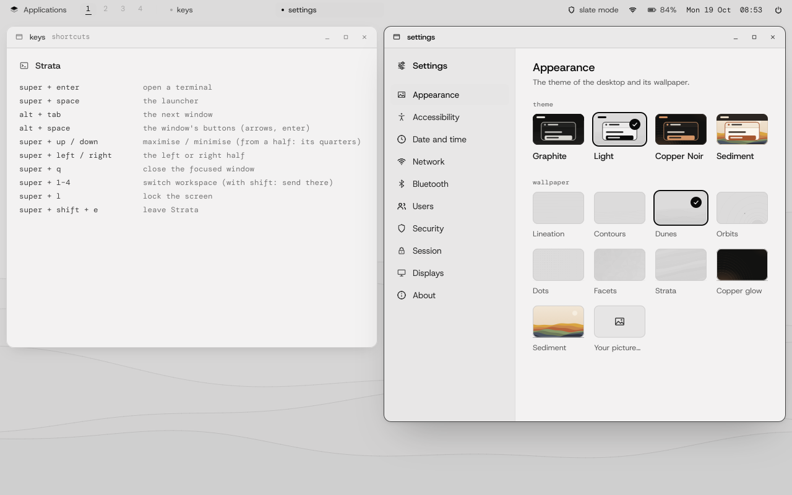
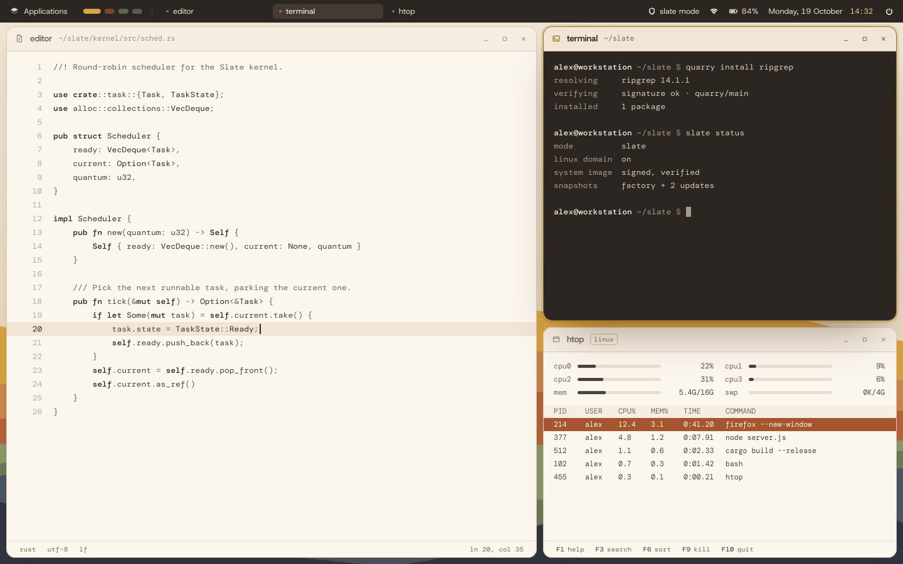
Users
Add an account (a full name, a username and a password, and whether it's an administrator), and open one to change it:
- Administrator: can change system settings and install software, after approval.
- Can use the desktop: Strata starts when they log in; without it, they get the command line only. It applies from their next login. New accounts have it.
- Change the password, Ask for a new password at their next login, Full name, and Remove this account (its home folder too; press Enter twice).
On your own account you can change your password, your full name and your picture for the login and lock screens. Nobody can remove their own account or take away their own rights; another administrator has to.
12The terminal and command line
The Terminal runs chalk, SlateOS's own shell, which behaves like bash for everyday use: pipes, job control, history, arrays, functions and scripts.
Using the Terminal
- Tabs: the + after the tabs, ctrl + t, or New tab on the right button's menu opens a tab in the folder you're in. A tab's × (or the middle button on it) and ctrl + shift + w close it; ctrl + Page Up / Page Down or ctrl + tab move between them. A dot marks a tab with new output. In full-screen programs (an editor,
top) ctrl + t is the program's own: use ctrl + shift + t there. Each tab has its own shell, and closing the last one closes the window. - Drag to select (double-click a word, triple-click a line). ctrl + shift + c copies, ctrl + shift + v pastes; the middle button (or shift + Insert) pastes the last selection; the right button has Copy and Paste.
- The wheel and shift + Page Up/Page Down scroll back. Text reflows when you resize.
The tools
The usual commands are SlateOS's own, written to match GNU's behaviour: ls, cp, mv, grep, sed, awk, find, sort, tar, gzip, bzip2, xz, zstd, the checksums and the rest. A few worth knowing:
| command | what it does |
|---|---|
etch FILE | the text editor for the terminal, with syntax colour and the mouse |
less FILE | read a file a page at a time; / searches |
top | live processes; V the tree, Z colours, W saves the look |
fetch -o FILE URL | download over HTTP or HTTPS (-P shows progress, -c continues). Without -o it writes to the terminal, like curl |
free, df, ps, dmesg | memory, disks, processes, the system's log |
ping, ip, ss | the network |
lspci, lsusb | the PC's devices |
chattr, lsattr | file attributes |
poweroff, reboot | shut down or restart |
fetch -P -o hello-2.12.3.tar.gz https://ftp.gnu.org/gnu/hello/hello-2.12.3.tar.gz
On the text console (no Strata), you can start the desktop by hand with strata, if your account Can use the desktop.
13Accounts and administration
SlateOS has no root password. The account made when installing is an administrator, in the wheel group: system changes ask for your own password.
su -with your own password gives a root shell.sudo COMMANDruns one command as root, after your password.passwdchanges your password (and, on an encrypted disk, the disk's with it).useradd -m -G wheel,seat NAMEandpasswd NAMEadd an administrator who can use the desktop, from the command line.usermod,userdel,chageandgpasswddo the rest. Settings › Users does it all with the mouse.
The system's own files (/bin, /usr, /boot and the rest) are a signed, read-only image that even root can't change, except through the package manager and the updater. A mistake or a malicious script can't quietly damage it, and every change it does go through is one you can undo.
The seat group decides who may use the screen and input for the desktop; the wheel group decides who administers. Settings › Users shows both as switches.
14Installing software
SlateOS has three ways to add software, for three kinds of software:
| what | how | see |
|---|---|---|
| SlateOS's own packages | quarry, the package manager | below |
| Desktop apps from Flathub | App Center, or slate-flatpak | 22 |
| Linux software from source | your own Linux system, from the terminal | 23 |
quarry
quarry installs signed packages. On a SlateFS system, each change is made to a snapshot of the system first, so the system before it is kept to fall back on.
quarry update # fetch and verify the repository indexes quarry search TERM # find packages quarry info NAME # about a package quarry install NAME # install it, with what it needs quarry remove NAME quarry list # what is installed quarry upgrades # what an upgrade would install quarry upgrade # install it
15Updates and rollback
An update never changes the running system. It installs a new version beside it, which starts the next time the computer starts. The version before is kept.

- The Software Updater checks every six hours (the top bar says "N updates"), shows what's new, and installs it. A restart for an installed update needs no password.
- If the new version fails to start, the computer goes back to the one before by itself.
- Going back by hand: Roll back to the previous system in the launcher, or
slate-update rollbackas root. It takes effect at the next start. slate-update statusshows the system's versions and which one starts next.
Your settings in /etc are carried across updates. Your Flatpak apps update in the background too (see chapter 22).
16Security
Slate mode and Linux compatibility
Every program runs in one of two domains: Slate (SlateOS's own signed programs) or Linux (everything else). In Slate mode, the default, Linux programs don't run at all. Turn on Linux compatibility to let them, kept apart:
- A Linux program can't change SlateOS's system files, or see or signal SlateOS's own programs.
- Once a process is in the Linux domain, it stays there, along with everything it starts.
slate-compat status slate-compat on slate-compat off
Signed and read-only
Every SlateOS program is signed, and the kernel runs it as SlateOS's only if the signature checks. The system image is read-only to everyone, root included, except the package manager and the updater.
Per-app permissions
Apps installed with quarry get only the permissions their package declares; anything undeclared is refused. Linux apps from Flathub run in Flatpak's sandbox, and Linux software built from source runs in a box of its own.
The firewall
Incoming connections are refused unless allowed. Out of the box only SSH is let in.
slate-firewall allow tcp 8080 slate-firewall deny tcp 8080
Under the hood
Address-space layout randomisation for programs and the kernel, strict write-xor-execute memory, a hardened allocator, and control-flow integrity in the kernel.
17Your encrypted disk
The disk's password is your account's password: change one with passwd and the other follows.
If the password is forgotten and there's no recovery key, the data can't be recovered by anyone. Make one now and keep it somewhere safe.
slate-crypt add-recovery-key root # prints the key: write it down slate-crypt status root # the disk's key slots
Type the recovery key wherever the password is asked; capitals, dashes and spaces don't matter. slate-crypt also adds and removes passwords, checks which slot a password opens, repairs a damaged header from its backup (repair), and creates and opens other encrypted partitions (format, open, close).
18Network and SSH
SlateOS gets its address automatically (DHCP), using the first port with a cable plugged in, and follows the cable if you move it. IPv4 and IPv6 both work, with a DNS cache and the clock set over NTP.
A fixed address
Settings › Network, or slate-network (it asks for your password):
slate-network # the settings, and each card's state slate-network '*' static 192.168.1.20/24 gateway 192.168.1.1 dns 9.9.9.9 slate-network eth1 dhcp # one card back to automatic
For one start only, press e in the boot menu and add slate.ip=192.168.1.20/24,192.168.1.1,9.9.9.9.
Logging in from another computer
SlateOS's SSH server is on from the start (with sftp and scp):
ssh ada@192.168.1.50
# log in with a key instead of the password:
ssh ada@192.168.1.50 'mkdir -p .ssh && cat >> .ssh/authorized_keys' < ~/.ssh/id_ed25519.pubThe first time, compare the host key's fingerprint with the one the PC's console printed when the SSH server started (sshd: listening on port 22, host key SHA256:…).
19Bluetooth
Settings › Bluetooth lists devices nearby. Choose one to pair: compare the number both show, then press Enter. Paired devices reconnect by themselves whenever they're in range.
- Mice and keyboards using Bluetooth Low Energy work, with their pairings kept.
- A mouse pairs by itself: put it in pairing mode and the pointer appears, even in "Try SlateOS". A device paired this way can move and click but never type; pair it from Settings to give it everything.
/etc/slate/bluetoothsetsautopair=always(default),autoornever. - Pairings made while trying SlateOS carry over to the installed system.
- Headphones and other audio can't be used yet (no sound support).
slate-bt status slate-bt scan slate-bt pair ADDR slate-bt connect ADDR slate-bt remove ADDR
20Displays and graphics
SlateOS drives every graphics card itself, at your monitor's native resolution when the PC's firmware offers it. Settings › Displays places each display (right, left, above or below the main one), and sets its resolution, refresh rate and scale.

Full graphics on AMD Radeon
On the graphics built into some recent AMD Ryzen processors, SlateOS's own AMD driver can do more: your monitor at its own resolution, smoother updates, and windows composited on the GPU. It needs AMD's firmware, which you opt into:
- The installer's Desktop step offers SlateOS only (default) or Full graphics. Settings › Displays switches it later.
- After switching on, the next start asks Keep full graphics? with a 20-second countdown. If you choose Revert, press Esc or don't answer (say, because the screen is blank), SlateOS goes back to standard graphics by itself.
- The boot menu's Slate (standard graphics) starts without it, any time.
21Linux programs and apps
SlateOS runs Linux programs unmodified once Linux compatibility is on. There are three ways to bring them in, each kept apart from SlateOS in its own way.
| you want | use | it lives in |
|---|---|---|
| A desktop app (GIMP, LibreOffice, a game…) | App Center / slate-flatpak | Flatpak's sandbox |
| A web browser | Web Browser | Flatpak's sandbox |
| A program you have as source code | SlateOS's terminal: ./configure, make | your own Linux system (a box) |
| Graphical programs from Alpine Linux | slate-linux | the Linux runtime |
The Linux runtime
The runtime is an Alpine Linux system kept apart in /var/lib/slate/linux. Flatpak, the browser and App Center run inside it, and it sets itself up the first time one of them needs it. To set it up by hand, as root:
slate-compat on slate-linux setup # Alpine's base (checked), Sway, Xwayland, Firefox, a font slate-linux setup foot # or name other Alpine packages slate-linux upgrade # keep it up to date (a failed upgrade is undone) slate-linux rollback # back to before the last upgrade
Its programs show in the launcher. From a terminal, slate-linux-app firefox opens one in a window, and slate-linux run PROGRAM runs one without a window. Copy and paste work between Linux programs and SlateOS's own. They see only your home folder.
22Flatpak, AppImages and the web
The Web Browser
SlateOS has no browser engine of its own. The first time you open Web Browser, it offers Firefox from Flathub, as Mozilla publishes it, after checking that Flathub's signing key is the one SlateOS trusts. One click sets up everything it needs, with one password approval and a progress bar ("Fetching Firefox from Flathub (2 of 2): 42%").
web-browser --getdoes the same from a terminal.web-browser --use com.example.Browsermakes another Flathub browser the one Web Browser opens.- If the browser doesn't appear,
~/.cache/slate/browser.logsays why.
App Center
App Center browses and searches Flathub's catalog by category, with icons, and installs, opens and removes apps, showing how far an install has got. Apps are yours, kept in your home folder, so installing needs no password. Each runs in Flatpak's sandbox with only the access its makers asked for, and follows Strata's theme, fonts and accent.
From the terminal
slate-flatpak install org.gnome.Calculator slate-flatpak run org.gnome.Calculator slate-flatpak updates # what is newer on Flathub slate-flatpak update # update them all (the old versions kept) slate-flatpak rollback org.gnome.Calculator # back to the version before slate-flatpak list slate-flatpak remove org.gnome.Calculator slate-flatpak --system install org.gnome.Calculator # for every account (asks for your password)
Strata updates your apps in the background every six hours or so. The Software Updater shows when that last happened, turns it off and on, and has Update apps and Roll back.
AppImages
slate-appimage FILE.AppImage # run it (unpacked once; no FUSE needed) slate-appimage --add FILE.AppImage # put it in the launcher slate-appimage --list # the unpacked ones and their sizes slate-appimage --remove FILE.AppImage slate-appimage --clean # those whose file is gone
23Linux software from source
Some programs are published only as source code, built with ./configure, make and sudo make install. SlateOS builds and runs them with Linux's own tools, right in its own terminal, as if they were SlateOS's commands. Behind the scenes they run in your own Linux system, kept apart from SlateOS.
Before you start
- Linux compatibility must be on:
slate-compat status, andsudo slate-compat onif not. - Use your own account, not root. Each person gets their own Linux system; root doesn't have one.
- About 1.6 GB free disk space and an internet connection the first time.
Walkthrough: GNU hello
Get the source with SlateOS's own tools:
mkdir -p ~/src && cd ~/src fetch -P -o hello-2.12.3.tar.gz https://ftp.gnu.org/gnu/hello/hello-2.12.3.tar.gz tar xf hello-2.12.3.tar.gz cd hello-2.12.3
Configure it:
./configure. SlateOS sees the folder holds source code and asks once:/home/you/src/hello-2.12.3 has source code. Build and run it with Linux tools, in your Linux system (apart from SlateOS)? [Y/n]
Press Enter. The first time only, it sets up your Linux system: setting up your Linux system (once)…, then it downloads Arch Linux (about 400 MB), checks it against Arch's own signing key, and installs its build tools. That takes several minutes and ends with NNN Linux commands are ready in SlateOS's terminal. Then
./configureruns as usual.Build it:
make. While a Linux program runs, the window's title bar shows the linux tag. That's the only sign.Install it:
sudo make install. It installs into your Linux system, never into SlateOS, and ends with hello is now a command.Run it:
hello, by name, from any folder: Hello, world!
How it works
- Your own Linux system is Arch Linux, with GCC, make, CMake, Meson, pkg-config and the rest. Autotools, CMake, Meson, Cargo and Python projects all build.
- Its programs are SlateOS commands.
make,gcc,pacman, and whatever you install, run by name in the folder you're in, on your files there. SlateOS's own commands always come first. - Install more tools the Arch way:
sudo pacman -S cmake. New commands are announced: cmake is now a command. - Source folders are remembered.
slate-box heremarks the folder you're in as Linux source, andslate-box not-herekeeps it SlateOS's.
Kept apart
Your Linux system is yours alone. Its root has no power over SlateOS: it has IDs of its own that no SlateOS account has. It can't see SlateOS's programs, write SlateOS's system, or reach other people's Linux systems. It sees your files only in the folder you run a command from.
slate-box show # what your Linux system may reach slate-box share ~/Documents # share a folder of your home for good slate-box unshare ~/Documents slate-box network off # cut it off the network (on to undo)
Anything a box's program is refused is noted in SlateOS's log, so a misbehaving build script shows up. The box talks to SlateOS only over one private, encrypted channel per session, for a few named requests such as making an install receipt.
Install receipts: undo any install
Every sudo make install or sudo pacman -S is recorded as a receipt: exactly which files it added, changed or removed.
slate-box installs # list them slate-box undo hello-2.12.3 # remove exactly what that install added, restore what it changed slate-box rollback hello-2.12.3 # the whole Linux system back to before it (and every install since)
undo refuses if a later install touched the same files, so it can't break something that came after.
Disk space
Settings › Linux boxes shows how much each Linux system and each downloaded base takes (counting only what each holds of its own), warns when the disk is getting full, and clears package caches or removes a box. From the terminal:
slate-box list # each box, and its size slate-box clean # empty its package cache slate-box remove NAME slate-box remove-base arch
More boxes, and a Linux shell
slate-box enter linux opens a shell inside your Linux system (the prompt says [box linux]; exit comes back). slate-box create NAME makes another, separate Linux system, and slate-box run NAME -- COMMAND runs a command in it.
Linux boxes are for command-line programs. Graphical programs from source and services that run in the background aren't supported yet; use App Center for desktop apps.
24Several systems on one PC
When SlateOS is installed beside another system, its boot menu lists both: choose with the arrow keys and Enter within three seconds. From SlateOS you can choose the system for the next start only, as root:
slate-update next # the menu's entries slate-update next 'Windows Boot Manager' # start it next time
In the boot menu, e edits an entry's kernel command line for one start: slate.login=text for a text login, slate.ip=… for a fixed address.
25When something goes wrong
| problem | what to try |
|---|---|
| The stick doesn't start | Secure Boot off; try the stick's other entry in the firmware's boot menu (with or without "UEFI:") |
| "No disk to install on was found" | SATA mode AHCI; a disk of 2 GB or more; shell then dmesg in the text installer |
| The keyboard does nothing | Plug it straight into the PC, not through a separate USB hub |
| Network address "none yet" | Check the cable and that the port is supported; a USB Ethernet adapter gets around it |
| The graphical installer looks wrong | Restart and choose Install Slate (text mode) |
| Dark screen after choosing full graphics | Wait 20 seconds, or choose Slate (standard graphics) in the boot menu |
| An update won't start | It goes back by itself; or Roll back in the launcher, slate-update rollback |
| "this account may not use the desktop" | An administrator turns on Can use the desktop in Settings › Users (or sudo gpasswd -a NAME seat), then log in again |
| A Linux program won't run | slate-compat status; turn it on with sudo slate-compat on |
| "Linux boxes are for people's own accounts" | Log in as your own account rather than root |
| The browser doesn't appear | ~/.cache/slate/browser.log |
| Anything else | dmesg (the system's log), /var/log/install.log; a photo of the screen helps a bug report |
Trying SlateOS in a virtual machine
- QEMU and virt-manager: a q35 machine with UEFI firmware (Secure Boot off), a virtio disk, network card and graphics, started from
slate.iso. - GNOME Boxes: works from
slate.iso; for speed, switch the machine to UEFI with virtio disk and network (virsh --connect qemu:///session edit NAME). Give it 4 GiB of memory or more for Firefox. - From a source checkout:
cargo xtask try-installruns the installer in a QEMU window on a kept virtual disk, andcargo xtask try-install --diskstarts the installed system (ssh -p 2222 USER@localhostworks too).make runboots a ready-made system.
26Command cheat sheet
| command | what it does |
|---|---|
su - · sudo CMD | a root shell · one command as root (your own password) |
slate-compat on|off|status | Linux compatibility |
quarry install|remove|search|list NAME | SlateOS's packages |
quarry upgrade · slate-update status|rollback | updates, and going back |
slate-update next TITLE | start another system next time |
slate-network | network settings |
slate-firewall allow|deny tcp PORT | open or close a port |
slate-crypt add-recovery-key root | a recovery key for the encrypted disk |
slate-bt scan|pair|connect ADDR | Bluetooth |
slate-disk poweroff | stop a USB disk before unplugging |
slate-linux setup|upgrade|rollback | the Linux runtime |
web-browser --get | Firefox from Flathub |
slate-flatpak install|run|update|rollback|remove ID | Flatpak apps |
slate-appimage FILE | run an AppImage |
slate-box setup | set up your Linux system ahead of time |
slate-box installs|undo|rollback | install receipts |
slate-box show|share|unshare|network | what your Linux system may reach |
slate-box list|clean|remove | its disk space |
slate-box enter linux | a shell in your Linux system |
fetch -P -o FILE URL | download a file |
dmesg · top · free · df | log, processes, memory, disks |
strata | start the desktop from the text console |
poweroff · reboot | shut down · restart |